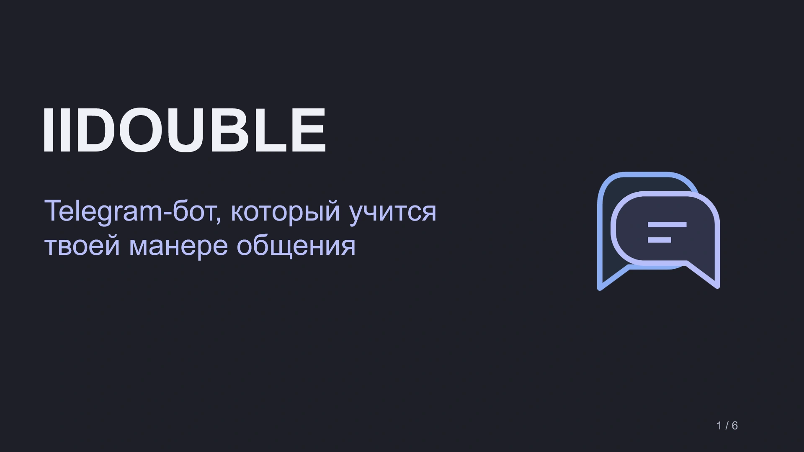
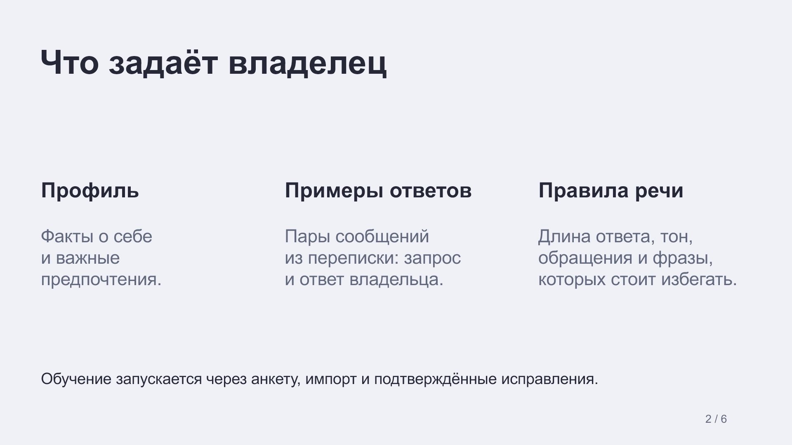
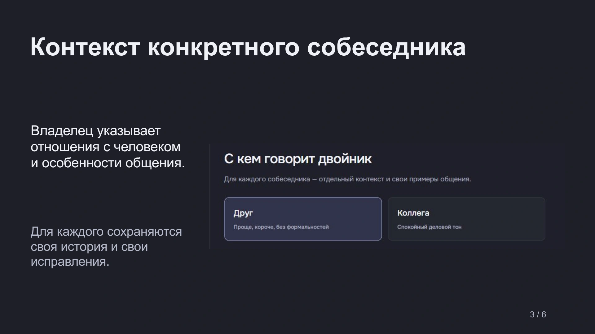
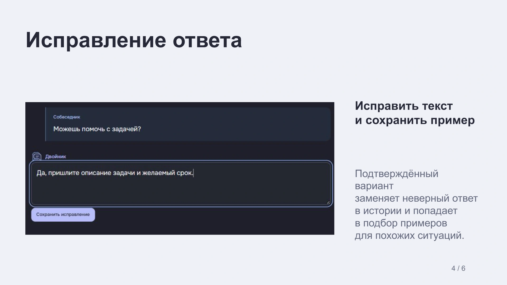
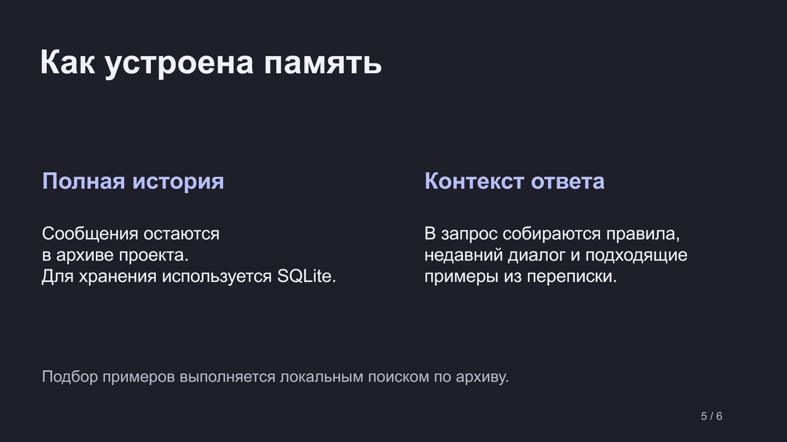
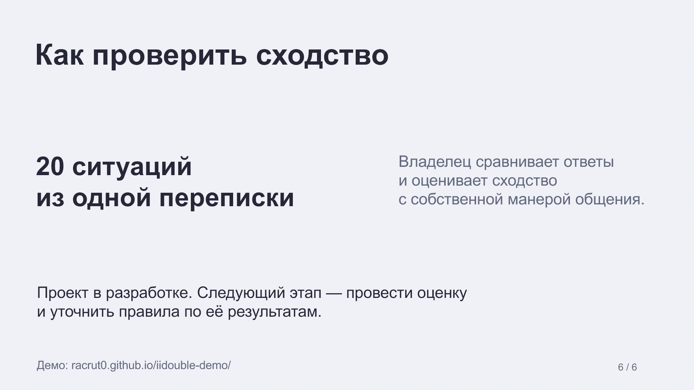

Все работыОткрыть PDF
Термокружка 450 мл 
Корпус и крышка 
Полезный объём Идея проекта Данные владельца Контекст собеседника Исправление ответа Память проекта Проверка сходства
Дизайн материалов
Карточки товара, одностраничное меню и презентация продукта. В каждом примере — свой формат и конкретная задача.
Термокружка Pause
Три карточки для одного товара. Первая показывает объём и цвет, вторая — материалы деталей, третья — полезный объём внутренней колбы.


1 из 3
Демонстрационный концепт. Товар и характеристики условные. Объём 450 мл относится к внутренней колбе.
- Что сделал
- Собрал серию с одной сеткой, палитрой и системой текста. Для материалов использовал крупный план того же товара.
- Формат
- Три изображения 1080 × 1440 px и общий PDF.
Презентация IIDOUBLE
Шесть слайдов о продукте. Каждый раскрывает отдельную тему: данные владельца, контекст собеседника, исправления, память и проверку сходства.






1 из 6
- Что сделал
- Разделил историю продукта на самостоятельные темы, оставил два разных фрагмента интерфейса и единое оформление слайдов.
- Формат
- Редактируемая презентация PPTX и PDF для просмотра.